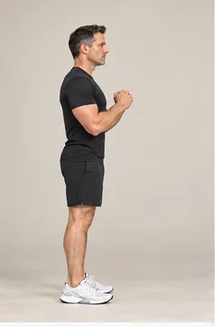
Sentadilla a silla
Demostración en bucle: observa cómo baja y vuelve a subir el cuerpo. Controla el movimiento; no hace falta imitar exactamente la amplitud.
Reto de calistenia progresivo para hombres de 45 a 50 años. Ejercicios explicados con animaciones, cronómetro guiado y seguimiento diario.
Una repetición controlada es mejor que muchas rápidas.
Ver técnica y adaptacionesElige tu nivel y empieza cuando estés listo.
Preparando el acceso sin conexión…
Pulsa cada día para ver su sesión. El botón «Marcar como completado» guarda tu avance en este navegador, incluso si cierras la web. Puedes llevarlo a otro dispositivo con una copia de seguridad.
Tres sesiones de fuerza por semana (A, B y C), separadas por recuperación, junto a movilidad y caminatas. Se adapta a principiantes y personas con práctica previa. Bastan una pared, una silla estable y una esterilla opcional.
Calentamiento: 30 s marcha, 30 s hombros, 30 s cadera, 30 s tobillos. En fuerza alterna trabajo y transición cada minuto. Al terminar: respiración 1 min, movilidad piernas 1 min y hombros/pecho 1 min.
Semana 1: 30 s trabajo / 30 s transición.
Semana 2: 35 s / 25 s.
Semana 3: 40 s / 20 s.
Semana 4: 45 s / 15 s.
Durante el trabajo haz repeticiones lentas, sin completar el tiempo a cualquier precio. Intensidad orientativa: esfuerzo 6–8/10, dejando unas 2–3 repeticiones de margen. Si la técnica falla, para antes.
Secuencias de aspecto fotográfico con ocho posiciones principales, reproducidas en un ciclo de ida y vuelta. Elige la variante que se adapte a tu nivel.

Demostración en bucle: observa cómo baja y vuelve a subir el cuerpo. Controla el movimiento; no hace falta imitar exactamente la amplitud.
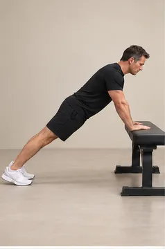
Demostración en bucle: observa cómo baja y vuelve a subir el cuerpo. Controla el movimiento; no hace falta imitar exactamente la amplitud.
Demostraciones sintéticas de aspecto realista: ocho posiciones principales por ejercicio y retorno animado. Mira la técnica, elige una adaptación segura y entrena sin dolor. No son grabaciones de un entrenador real.
Coloca los pies a la anchura de las caderas. Lleva la cadera atrás, toca la silla y levántate sin impulso.
Clave técnica: Rodillas alineadas con los pies; apoya bien los talones.
Adapta: Más fácil: siéntate completamente. Más difícil: no llegues a tocar la silla.
Apoya las manos en una pared o una superficie elevada estable. Flexiona los codos y empuja manteniendo el cuerpo recto.
Clave técnica: No hundas la zona lumbar y mantén los codos a unos 30–45° del tronco.
Adapta: Más fácil: pared. Más difícil: encimera firme y progresivamente menor inclinación.
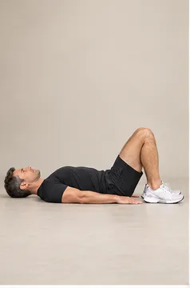
Tumbado boca arriba con rodillas flexionadas, empuja el suelo con los talones y eleva las caderas. Baja de forma controlada.
Clave técnica: Aprieta glúteos arriba sin arquear la espalda.
Adapta: Más fácil: amplitud corta. Más difícil: pausa de 2 segundos arriba.
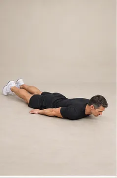
Boca abajo, separa ligeramente los brazos del suelo y dibuja un arco desde los costados hacia la cabeza.
Clave técnica: Mantén el cuello largo y mueve los brazos sin dolor.
Adapta: Más fácil: amplitud pequeña. Más difícil: movimiento más lento.
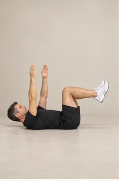
Boca arriba, caderas y rodillas a 90°. Extiende lentamente brazo y pierna contrarios y vuelve. Alterna lados.
Clave técnica: La región lumbar no debe despegarse ni arquearse.
Adapta: Más fácil: mueve solo brazos o solo piernas. Más difícil: estira más la pierna.
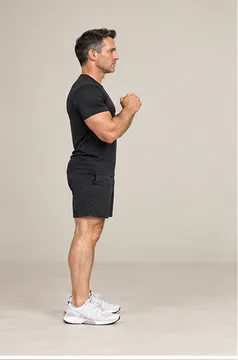
Con una mano en la pared para equilibrarte, lleva una pierna atrás, flexiona ambas rodillas y vuelve. Alterna.
Clave técnica: Paso suficientemente largo y tronco erguido; evita golpes en la rodilla.
Adapta: Más fácil: baja pocos centímetros. Más difícil: baja más sin perder estabilidad.
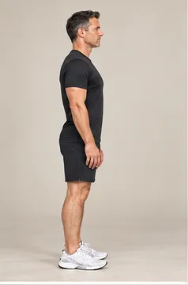
Con rodillas ligeramente flexionadas, lleva la cadera atrás y el torso adelante, manteniendo la espalda neutra.
Clave técnica: El movimiento empieza en la cadera, no redondeando la espalda.
Adapta: Más fácil: manos en caderas. Más difícil: pausa de 3 segundos abajo.
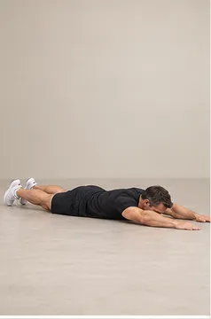
Boca abajo, eleva muy poco el pecho si es cómodo y lleva los codos hacia las costillas; vuelve a extender los brazos.
Clave técnica: No hiperextiendas el cuello ni la región lumbar.
Adapta: Más fácil: pecho apoyado. Más difícil: detén 2 segundos con codos atrás.
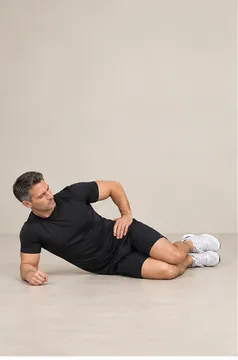
Apóyate sobre un antebrazo y las rodillas flexionadas; sube la cadera y mantén alineados hombros, cadera y rodillas.
Clave técnica: Codo bajo el hombro; alterna de lado a mitad del intervalo.
Adapta: Más fácil: elevaciones breves. Más difícil: piernas estiradas.
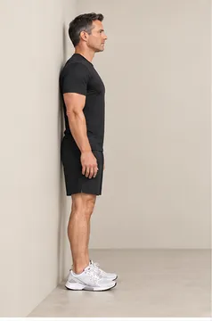
Apoya la espalda en la pared y deslízate un poco hacia abajo; mantén la posición sin dolor.
Clave técnica: No necesitas bajar a 90°; empieza a una profundidad cómoda.
Adapta: Más fácil: casi de pie. Más difícil: baja gradualmente unos centímetros.
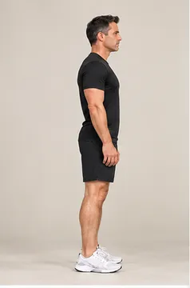
De pie y con apoyo opcional en la pared, eleva lentamente ambos talones y baja sin dejarte caer.
Clave técnica: Mantén tobillos alineados, evita rebotar.
Adapta: Más fácil: dos manos en pared. Más difícil: pausa arriba o una pierna.
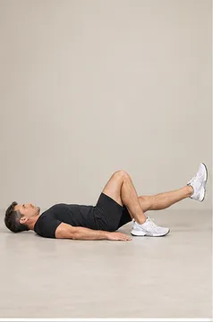
En posición de puente, descarga un poco una pierna o elévala y eleva la pelvis usando principalmente la otra. Cambia a mitad.
Clave técnica: Caderas horizontales; vuelve a puente bilateral si gira la pelvis.
Adapta: Más fácil: puente con dos pies. Más difícil: extiende más la pierna libre.
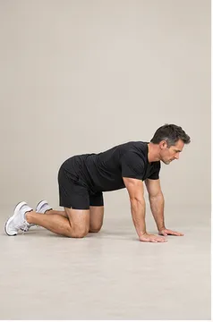
A cuatro apoyos, alarga brazo y pierna contrarios sin girar la pelvis. Vuelve y alterna lentamente.
Clave técnica: Manos bajo hombros, rodillas bajo caderas; columna neutra.
Adapta: Más fácil: extiende solo el brazo o la pierna. Más difícil: pausa 2 segundos.
Días 2 y 6 (movilidad): marcha suave 3 min; gato-vaca 3 min; cadera 3 min; hombros 3 min; tobillos 1 min 30 s; respiración 1 min 30 s.
Día 4 (caminata): 15 min a ritmo cómodo, conversando con normalidad.
Día 7 (recuperación): respiración 3 min; paseo suave 7 min; estiramientos cómodos 5 min.
Los días suaves son parte del programa. No los conviertas en sesiones intensas de piernas o brazos.
Suspende el ejercicio ante dolor agudo, mareo, opresión en el pecho o falta de aire inusual. Si llevas tiempo sin entrenar, tienes enfermedad cardiovascular o limitaciones articulares, consulta con un profesional antes de empezar.
La masa muscular requiere esfuerzo progresivo, descanso y alimentación suficiente. Estos 15 minutos son una base sostenible, no una garantía de hipertrofia visible en 28 días.
Para progresar después: usar variantes más exigentes, añadir una barra/anillas bien instaladas o banda de resistencia para el remo y ampliar el volumen cuando resulte posible.
Cinco demostraciones de aspecto realista para los días suaves. Las secuencias ilustran varias posiciones del ejercicio; el ritmo real debe ser lento y sin dolor.
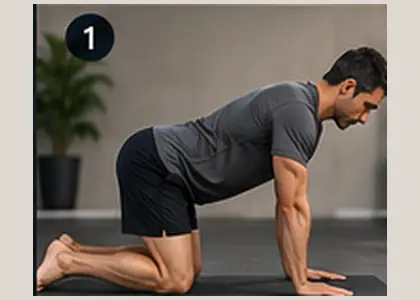
COLUMNA · MOVILIDADAlterna suavemente extensión y flexión de la columna en cuadrupedia.
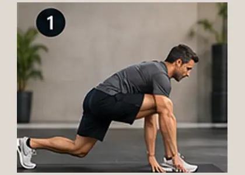
CADERAS · FLUIDEZZancada larga y apertura suave de cadera, con las manos apoyadas.
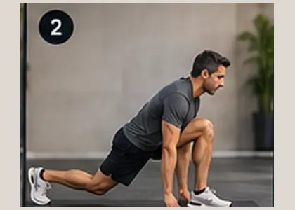
HOMBROS · APERTURAApertura torácica controlada con una mano en el suelo y el brazo contrario hacia arriba.
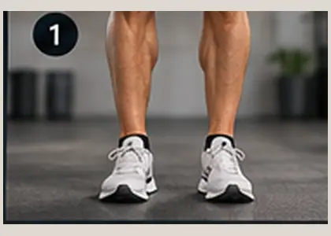
TOBILLOS · ESTABILIDADEleva talones, levanta puntas y explora suavemente la dorsiflexión del tobillo.
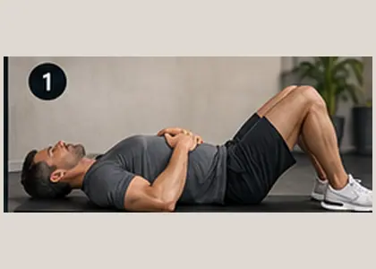
RESPIRACIÓN · RECUPERACIÓNAcostado boca arriba, aprende a respirar de forma pausada sin elevar los hombros.
Tu avance se guarda en este navegador. Exporta una copia e impórtala en otro dispositivo para continuar. La importación combina los días completados.
Instala Calistenia 28 para abrirla desde tu pantalla de inicio.
En iPhone o iPad: abre en Safari, pulsa Compartir y «Añadir a pantalla de inicio». En Android o escritorio: busca «Instalar aplicación» en el menú del navegador.